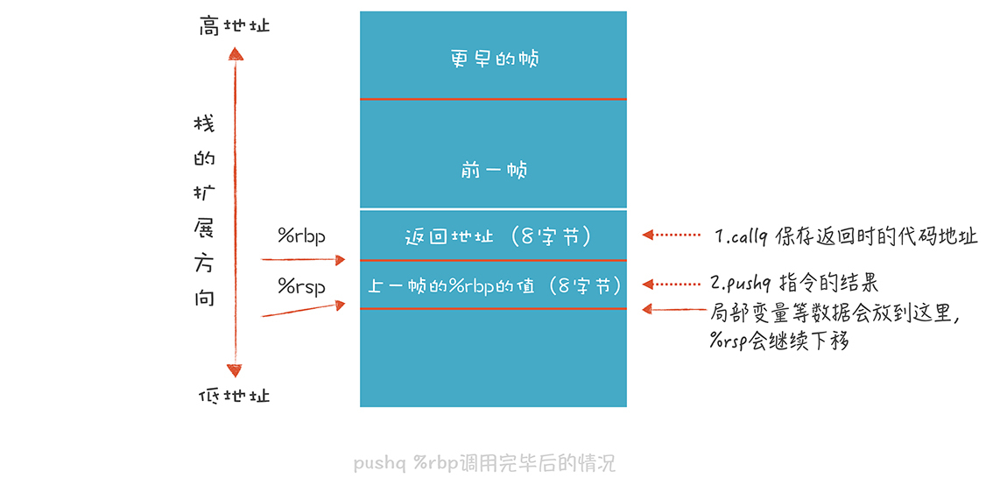
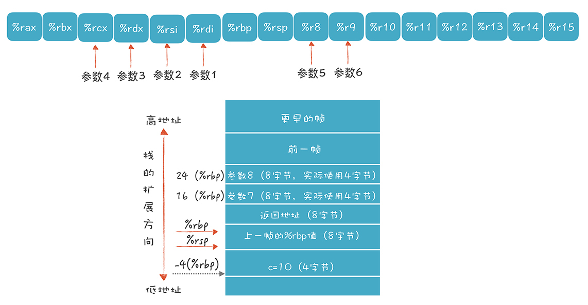
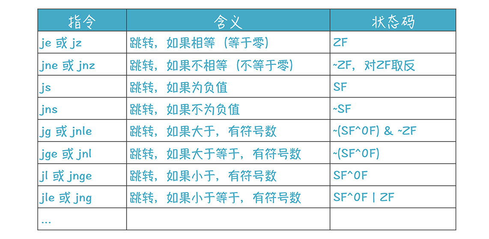

- 00 开篇词 为什么你要学习编译原理？.md.html
- 01 理解代码：编译器的前端技术.md.html
- 02 正则文法和有限自动机：纯手工打造词法分析器.md.html
- 03 语法分析（一）：纯手工打造公式计算器.md.html
- 04 语法分析（二）：解决二元表达式中的难点.md.html
- 05 语法分析（三）：实现一门简单的脚本语言.md.html
- 06 编译器前端工具（一）：用Antlr生成词法、语法分析器.md.html
- 07 编译器前端工具（二）：用Antlr重构脚本语言.md.html
- 08 作用域和生存期：实现块作用域和函数.md.html
- 09 面向对象：实现数据和方法的封装.md.html
- 10 闭包： 理解了原理，它就不反直觉了.md.html
- 11 语义分析（上）：如何建立一个完善的类型系统？.md.html
- 12 语义分析（下）：如何做上下文相关情况的处理？.md.html
- 13 继承和多态：面向对象运行期的动态特性.md.html
- 14 前端技术应用（一）：如何透明地支持数据库分库分表？.md.html
- 15 前端技术应用（二）：如何设计一个报表工具？.md.html
- 16 NFA和DFA：如何自己实现一个正则表达式工具？.md.html
- 17 First和Follow集合：用LL算法推演一个实例.md.html
- 18 移进和规约：用LR算法推演一个实例.md.html
- 19 案例总结与热点问题答疑：对于左递归的语法，为什么我的推导不是左递归的？.md.html
- 20 高效运行：编译器的后端技术.md.html
- 21 运行时机制：突破现象看本质，透过语法看运行时.md.html
- 22 生成汇编代码（一）：汇编语言其实不难学.md.html
- 23 生成汇编代码（二）：把脚本编译成可执行文件.md.html
- 24 中间代码：兼容不同的语言和硬件.md.html
- 25 后端技术的重用：LLVM不仅仅让你高效.md.html
- 26 生成IR：实现静态编译的语言.md.html
- 27 代码优化：为什么你的代码比他的更高效？.md.html
- 28 数据流分析：你写的程序，它更懂.md.html
- 29 目标代码的生成和优化（一）：如何适应各种硬件架构？.md.html
- 30 目标代码的生成和优化（二）：如何适应各种硬件架构？.md.html
- 31 内存计算：对海量数据做计算，到底可以有多快？.md.html
- 32 字节码生成：为什么Spring技术很强大？.md.html
- 33 垃圾收集：能否不停下整个世界？.md.html
- 34 运行时优化：即时编译的原理和作用.md.html
- 35 案例总结与热点问题答疑：后端部分真的比前端部分难吗？.md.html
- 36 当前技术的发展趋势以及其对编译技术的影响.md.html
- 37 云编程：云计算会如何改变编程模式？.md.html
- 38 元编程：一边写程序，一边写语言.md.html
- 加餐 汇编代码编程与栈帧管理.md.html
- 用户故事 因为热爱，所以坚持.md.html
- 第二季回归 这次，我们一起实战解析真实世界的编译器.md.html
- 结束语 用程序语言，推动这个世界的演化.md.html
- 捐赠
加餐 汇编代码编程与栈帧管理
在22讲中，我们侧重讲解了汇编语言的基础知识，包括构成元素、汇编指令和汇编语言中常用的寄存器。学习完基础知识之后，你要做的就是多加练习，和汇编语言“混熟”。小窍门是查看编译器所生成的汇编代码，跟着学习体会。
不过，可能你是初次使用汇编语言，对很多知识点还会存在疑问，比如：
- 在汇编语言里调用函数（过程）时，传参和返回值是怎么实现的呢？
- 21讲中运行期机制所讲的栈帧，如何通过汇编语言实现？
- 条件语句和循环语句如何实现？
- ……
为此，我策划了一期加餐，针对性地讲解这样几个实际场景，希望帮你加深对汇编语言的理解。
示例1：过程调用和栈帧
这个例子涉及了一个过程调用（相当于C语言的函数调用）。过程调用是汇编程序中的基础结构，它涉及到栈帧的管理、参数的传递这两个很重要的知识点。
假设我们要写一个汇编程序，实现下面C语言的功能：
/*function-call1.c */
#include <stdio.h>
int fun1(int a, int b){
int c = 10;
return a+b+c;
}
int main(int argc, char *argv[]){
printf("fun1: %d\n", fun1(1,2));
return 0;
}
fun1函数接受两个整型的参数：a和b，来看看这两个参数是怎样被传递过去的，手写的汇编代码如下：
# function-call1-craft.s 函数调用和参数传递
# 文本段,纯代码
.section __TEXT,__text,regular,pure_instructions
_fun1:
# 函数调用的序曲,设置栈指针
pushq %rbp # 把调用者的栈帧底部地址保存起来
movq %rsp, %rbp # 把调用者的栈帧顶部地址,设置为本栈帧的底部
subq $4, %rsp # 扩展栈
movl $10, -4(%rbp) # 变量c赋值为10，也可以写成 movl $10, (%rsp)
# 做加法
movl %edi, %eax # 第一个参数放进%eax
addl %esi, %eax # 把第二个参数加到%eax,%eax同时也是存放返回值的寄存器
addl -4(%rbp), %eax # 加上c的值
addq $4, %rsp # 缩小栈
# 函数调用的尾声,恢复栈指针为原来的值
popq %rbp # 恢复调用者栈帧的底部数值
retq # 返回
.globl _main # .global伪指令让_main函数外部可见
_main: ## @main
# 函数调用的序曲,设置栈指针
pushq %rbp # 把调用者的栈帧底部地址保存起来
movq %rsp, %rbp # 把调用者的栈帧顶部地址,设置为本栈帧的底部
# 设置第一个和第二个参数,分别为1和2
movl $1, %edi
movl $2, %esi
callq _fun1 # 调用函数
# 为pritf设置参数
leaq L_.str(%rip), %rdi # 第一个参数是字符串的地址
movl %eax, %esi # 第二个参数是前一个参数的返回值
callq _printf # 调用函数
# 设置返回值。这句也常用 xorl %esi, %esi 这样的指令,都是置为零
movl $0, %eax
# 函数调用的尾声,恢复栈指针为原来的值
popq %rbp # 恢复调用者栈帧的底部数值
retq # 返回
# 文本段,保存字符串字面量
.section __TEXT,__cstring,cstring_literals
L_.str: ## @.str
.asciz "Hello World! :%d \n"
需要注意，手写的代码跟编译器生成的可能有所不同，但功能是等价的，代码里有详细的注释，你肯定能看明白。
借用这个例子，我们讲一下栈的管理。在示例代码的两个函数里，有这样的固定结构：
# 函数调用的序曲,设置栈指针
pushq %rbp # 把调用者的栈帧底部地址保存起来
movq %rsp, %rbp # 把调用者的栈帧顶部地址，设置为本栈帧的底部
...
# 函数调用的尾声,恢复栈指针为原来的值
popq %rbp # 恢复调用者栈帧的底部数值
在C语言生成的代码中，一般用%rbp寄存器指向栈帧的底部，而%rsp则指向栈帧的顶部。栈主要是通过push和pop这对指令来管理的：push把操作数压到栈里，并让%rsp指向新的栈顶，pop把栈顶数据取出来，同时调整%rsp指向新的栈顶。
在进入函数的时候，用pushq %rbp指令把调用者的栈帧地址存起来（根据调用约定保护起来），而把调用者的栈顶地址设置成自己的栈底地址，它等价于下面两条指令，你可以不用push指令，而是运行下面两条指令：
subq $8, %rsp #把%rsp的值减8，也就是栈增长8个字节，从高地址向低地址增长
movq %rbp, (%rsp) #把%rbp的值写到当前栈顶指示的内存位置
而在退出函数前，调用了popq %rbp指令。它恢复了之前保存的栈指针的地址，等价于下面两条指令：
movq (%rsp), %rbp #把栈顶位置的值恢复回%rbp，这是之前保存在栈里的值。
addq $8, %rsp #把%rsp的值加8，也就是栈减少8个字节
上述过程画成一张直观的图，表示如下：

上面每句指令执行以后，我们看看%rbp和%rsp值的变化：

再来看看使用局部变量的时候会发生什么：
subq $4, %rsp # 扩展栈
movl $10, -4(%rbp) # 变量c赋值为10，也可以写成 movl $10, (%rsp)
...
addq $4, %rsp # 缩小栈
我们通过减少%rsp的值，来扩展栈，然后在扩展出来的4个字节的位置上写入整数，这就是变量c的值。在返回函数前，我们通过addq $4, %rsp再把栈缩小。这个过程如下图所示：
在这个例子中，我们通过移动%rsp指针来改变帧的大小。%rbp和%rsp之间的空间就是当前栈帧。而过程调用和退出过程，分别使用call指令和ret指令。“callq _fun1”是调用_fun1过程，这个指令相当于下面两句代码，它用到了栈来保存返回地址：
pushq %rip # 保存下一条指令的地址，用于函数返回继续执行
jmp _fun1 # 跳转到函数_fun1
_fun1函数用ret指令返回，它相当于：
popq %rip #恢复指令指针寄存器
jmp %rip
上一讲，我提到，在X86-64架构下，新的规范让程序可以访问栈顶之外128字节的内存，所以，我们甚至不需要通过改变%rsp来分配栈空间，而是直接用栈顶之外的空间。
上面的示例程序，你可以用as命令生成可执行程序，运行一下看看，然后试着做一下修改，逐步熟悉汇编程序的编写思路。
示例2：同时使用寄存器和栈来传参
上一个示例中，函数传参只使用了两个参数，这时是通过两个寄存器传递参数的。这次，我们使用8个参数，来看看通过寄存器和栈传参这两种不同的机制。
在X86-64架构下，有很多的寄存器，所以程序调用约定中规定尽量通过寄存器来传递参数，而且，只要参数不超过6个，都可以通过寄存器来传参，使用的寄存器如下：

超过6个的参数的话，我们要再加上栈来传参：

根据程序调用约定的规定，参数1～6是放在寄存器里的，参数7和8是放到栈里的，先放参数8，再放参数7。
在23讲，我会带你为下面的一段playscript程序生成汇编代码：
//asm.play
int fun1(int x1, int x2, int x3, int x4, int x5, int x6, int x7, int x8){
int c = 10;
return x1 + x2 + x3 + x4 + x5 + x6 + x7 + x8 + c;
}
println("fun1:" + fun1(1,2,3,4,5,6,7,8));
现在，我们可以按照调用约定，先手工编写一段实现相同功能的汇编代码：
# function-call2-craft.s 函数调用和参数传递
# 文本段,纯代码
.section __TEXT,__text,regular,pure_instructions
_fun1:
# 函数调用的序曲,设置栈指针
pushq %rbp # 把调用者的栈帧底部地址保存起来
movq %rsp, %rbp # 把调用者的栈帧顶部地址,设置为本栈帧的底部
movl $10, -4(%rbp) # 变量c赋值为10,也可以写成 movl $10, (%rsp)
# 做加法
movl %edi, %eax # 第一个参数放进%eax
addl %esi, %eax # 加参数2
addl %edx, %eax # 加参数3
addl %ecx, %eax # 加参数4
addl %r8d, %eax # 加参数5
addl %r9d, %eax # 加参数6
addl 16(%rbp), %eax # 加参数7
addl 24(%rbp), %eax # 加参数8
addl -4(%rbp), %eax # 加上c的值
# 函数调用的尾声,恢复栈指针为原来的值
popq %rbp # 恢复调用者栈帧的底部数值
retq # 返回
.globl _main # .global伪指令让_main函数外部可见
_main: ## @main
# 函数调用的序曲,设置栈指针
pushq %rbp # 把调用者的栈帧底部地址保存起来
movq %rsp, %rbp # 把调用者的栈帧顶部地址,设置为本栈帧的底部
subq $16, %rsp # 这里是为了让栈帧16字节对齐，实际使用可以更少
# 设置参数
movl $1, %edi # 参数1
movl $2, %esi # 参数2
movl $3, %edx # 参数3
movl $4, %ecx # 参数4
movl $5, %r8d # 参数5
movl $6, %r9d # 参数6
movl $7, (%rsp) # 参数7
movl $8, 8(%rsp) # 参数8
callq _fun1 # 调用函数
# 为pritf设置参数
leaq L_.str(%rip), %rdi # 第一个参数是字符串的地址
movl %eax, %esi # 第二个参数是前一个参数的返回值
callq _printf # 调用函数
# 设置返回值。这句也常用 xorl %esi, %esi 这样的指令,都是置为零
movl $0, %eax
addq $16, %rsp # 缩小栈
# 函数调用的尾声,恢复栈指针为原来的值
popq %rbp # 恢复调用者栈帧的底部数值
retq # 返回
# 文本段,保存字符串字面量
.section __TEXT,__cstring,cstring_literals
L_.str: ## @.str
.asciz "fun1 :%d \n"
用as命令，把这段汇编代码生成可执行文件，运行后会输出结果：“fun1: 46”。
as functio-call2-craft.s -o function-call2
./function-call2
这段程序虽然有点儿长，但思路很清晰，比如，每个函数（过程）都有固定的结构。7～10行，我叫做序曲，是设置栈帧的指针；25~26行，我叫做尾声，是恢复栈底指针并返回；13~22行是做一些计算，还要为本地变量在栈里分配一些空间。
我建议你读代码的时候，对照着每行代码的注释，弄清楚这条代码所做的操作，以及相关的寄存器和内存中值的变化，脑海里有栈帧和寄存器的直观的结构，就很容易理解清楚这段代码了。
除了函数调用以外，我们在编程时经常使用循环语句和if语句，它们转换成汇编是什么样子呢？我们来研究一下，首先看看while循环语句。
示例3：循环语句的汇编码解析
看看下面这个C语言的语句：
void fun1(int a){
while (a < 10){
a++;
}
}
我们要使用”gcc -S ifstmt.c -o ifstmt.s”命令，把它转换成汇编语句（注意不要带优化参数）：
.section __TEXT,__text,regular,pure_instructions
.macosx_version_min 10, 15
.globl _fun1 ## -- Begin function fun1
.p2align 4, 0x90
_fun1: ## @fun1
.cfi_startproc
## %bb.0:
pushq %rbp
.cfi_def_cfa_offset 16
.cfi_offset %rbp, -16
movq %rsp, %rbp
.cfi_def_cfa_register %rbp
movl %edi, -4(%rbp) #把参数a放到栈里
LBB0_1: ## =>This Inner Loop Header: Depth=1
cmpl $10, -4(%rbp) #比较参数1和立即数10,设置eflags寄存器
jge LBB0_3 #如果大于等于，则跳转到LBB0_3基本块
## %bb.2: ## in Loop: Header=BB0_1 Depth=1
movl -4(%rbp), %eax #这2行，是给a加1
addl $1, %eax
movl %eax, -4(%rbp)
jmp LBB0_1
LBB0_3:
popq %rbp
retq
.cfi_endproc
## -- End function
.subsections_via_symbols
这段代码的15、16、21行是关键，我解释一下：
- 第15行，用cmpl指令，将%edi寄存器中的参数1（即C代码中的参数a）和立即数10做比较，比较的结果会设置EFLAGS寄存器中的相关位。
EFLAGS中有很多位，下图是Intel公司手册中对各个位的解释，有的指令会影响这些位的设置，比如cmp指令，有的指令会从中读取信息，比如16行的jge指令：

第16行，jge指令。jge是“jump if greater or equal”的缩写，也就是当大于或等于的时候就跳转。大于等于是从哪知道的呢？就是根据EFLAGS中的某些位计算出来的。
第21行，跳转到循环的开始。
在这个示例中，我们看到了jmp（无条件跳转指令）和jge（条件跳转指令）两个跳转指令。条件跳转指令很多，它们分别是基于EFLAGS的状态位做不同的计算，判断是否满足跳转条件，看看下面这张表格：

表格中的跳转指令，是基于有符号的整数进行判断的，对于无符号整数、浮点数，还有很多其他的跳转指令。现在你应该体会到，汇编指令为什么这么多了。好在其助记符都是有规律的，可以看做英文缩写，所以还比较容易理解其含义。
另外我再强调一下，刚刚我让你生成汇编时，不要带优化参数，那是因为优化算法很“聪明”，它知道这个循环语句对函数最终的计算结果没什么用，就优化掉了。后面学优化算法时，你会理解这种优化机制。
不过这样做，也会有一个不好的影响，就是代码不够优化。比如这段代码把参数1拷贝到了栈里，在栈里做运算，而不是直接基于寄存器做运算，这样性能会低很多，这是没有做寄存器优化的结果。
示例4：if语句的汇编码解析
循环语句看过了，if语句如何用汇编代码实现呢？
看看下面这段代码：
int fun1(int a){
if (a > 10){
return 4;
}
else{
return 8;
}
}
把上面的C语言代码转换成汇编代码如下：
.section __TEXT,__text,regular,pure_instructions
.macosx_version_min 10, 15
.globl _fun1 ## -- Begin function fun1
.p2align 4, 0x90
_fun1: ## @fun1
.cfi_startproc
## %bb.0:
pushq %rbp
.cfi_def_cfa_offset 16
.cfi_offset %rbp, -16
movq %rsp, %rbp
.cfi_def_cfa_register %rbp
movl %edi, -8(%rbp)
cmpl $10, -8(%rbp) #将参数a与10做比较
jle LBB0_2 #小于等于的话就调转到LBB0_2基本块
## %bb.1:
movl $4, -4(%rbp) #否则就给a赋值为4
jmp LBB0_3
LBB0_2:
movl $8, -4(%rbp) #给a赋值为8
LBB0_3:
movl -4(%rbp), %eax #设置返回值
popq %rbp
retq
.cfi_endproc
## -- End function
.subsections_via_symbols
了解了条件跳转指令以后，再理解上面的代码容易了很多。还是先做比较，设置EFLAGS中的位，然后做跳转。
示例5：浮点数的使用
之前我们用的例子都是采用整数，现在使用浮点数来做运算，看看会有什么不同。
看看下面这段代码：
float fun1(float a, float b){
float c = 2.0;
return a + b + c;
}
使用-O2参数，把C语言的程序编译成汇编代码如下：
.section __TEXT,__text,regular,pure_instructions
.macosx_version_min 10, 15
.section __TEXT,__literal4,4byte_literals
.p2align 2 ## -- Begin function fun1
LCPI0_0:
.long 1073741824 ## float 2 常量
.section __TEXT,__text,regular,pure_instructions
.globl _fun1
.p2align 4, 0x90
_fun1: ## @fun1
.cfi_startproc
## %bb.0:
pushq %rbp
.cfi_def_cfa_offset 16
.cfi_offset %rbp, -16
movq %rsp, %rbp
.cfi_def_cfa_register %rbp
addss %xmm1, %xmm0 #浮点数传参用XMM寄存器，加法用addss指令
addss LCPI0_0(%rip), %xmm0 #把常量2.0加到xmm0上，xmm0保存返回值
popq %rbp
retq
.cfi_endproc
## -- End function
.subsections_via_symbols
这个代码的结构你应该熟悉了，栈帧的管理方式都是一样的，都要维护%rbp和%rsp。不一样的地方，有几个地方：
传参。给函数传递浮点型参数，是要使用XMM寄存器。
指令。浮点数的加法运算，使用的是addss指令，它用于对单精度的标量浮点数做加法计算，这是一个SSE1指令。SSE1是一组指令，主要是对单精度浮点数(比如C或Java语言中的float)进行运算的，而SSE2则包含了一些双精度浮点数（比如C或Java语言中的double）的运算指令。
返回值。整型返回值是放在%eax寄存器中，而浮点数返回值是放在xmm0寄存器中的。调用者可以从这里取出来使用。
课程小结
利用本节课的加餐，我带你把编程中常见的一些场景，所对应的汇编代码做了一些分析。你需要记住的要点如下：
函数调用时，会使用寄存器传参，超过6个参数时，还要再加上栈，这都是遵守了调用约定。
通过push、pop指令来使用栈，栈与%rbp和%rsp这两个指针有关。你可以图形化地记住栈的增长和回缩的过程。需要注意的是，是从高地址向低地址走，所以访问栈里的变量，都是基于%rbp来减某个值。使用%rbp前，要先保护起来，别破坏了调用者放在里面的值。
循环语句和if语句的秘密在于比较指令和有条件跳转指令，它们都用到了EFLAGS寄存器。
浮点数的计算要用到MMX寄存器，指令也有所不同。
通过这次加餐，你会更加直观地了解汇编语言，接下来的课程中，我会带你尝试通过翻译AST自动生成这些汇编代码，让你直观理解编译器生成汇编码的过程。
一课一思
你了解到哪些地方会使用汇编语言编程？有没有一些比较有意思的场景？是否实现了一些普通高级语言难以实现的结果？欢迎在留言区分享你的经验。
最后，感谢你的阅读，如果这篇文章让你有所收获，也欢迎你将它分享给更多的朋友。
© 2019 - 2023 Liangliang Lee. Powered by gin and hexo-theme-book.